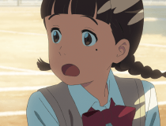
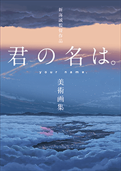

『秒速5センチメートル』（07年）、『言の葉の庭』（13年）など
意欲的な作品を数多く作り出してきた気鋭のアニメーション映画監督・新海誠。
精緻な風景描写とすれ違う男女の物語を、美しい色彩と繊細な言葉によって紡ぎ出す“新海ワールド”は、
世代や業界、国内外を問わず人々に大きな刺激と影響をおよぼしてきた。
新海誠監督の待望の新作となる『君の名は。』は、夢の中で“入れ替わる”少年と少女の恋と奇跡の物語。
世界の違う二人の隔たりと繋がりから生まれる「距離」のドラマを圧倒的な映像美とスケールで描き出す。
作画監督を務めるのは『千と千尋の神隠し』（01年）など
数多くのスタジオジブリ作品を手掛けた、アニメーション界のレジェンド、安藤雅司。
また、『心が叫びたがってるんだ。』（15年）などで新時代を代表するアニメーターとなった
田中将賀をキャラクターデザインに迎えるなど、日本最高峰のスタッフがスタジオに集結した。
そして、主題歌を含む音楽は、その唯一無二の世界観と旋律で熱狂的な支持を集めるロックバンド・RADWIMPSが担当する。
声の出演として、三葉が夢の中で見た男の子・瀧役に同世代の中でひときわ異彩を放つ演技派俳優、神木隆之介。
また、自らの運命に翻弄されていくヒロイン・三葉役を、オーディションでその役を射止めた上白石萌音。
更には長澤まさみ、市原悦子ほかアニメーションと実写の垣根を越えたまさに豪華キャスティングが実現した。
誰もが経験したことのない、
アニメーションの新領域。
新たな“不朽の名作”が誕生する！


監督新海 誠
1973年生まれ、長野県出身。2002年、個人で制作した短編作品「ほしのこえ」でデビュー。同作品は、新世紀東京国際アニメフェア21「公募部門優秀賞」をはじめ多数の賞を受賞。2004年公開の初の長編映画『雲のむこう、約束の場所』では、その年の名だたる大作をおさえ、第59回毎日映画コンクール「アニメーション映画賞」を受賞。2007年公開の『秒速5センチメートル』で、アジアパシフィック映画祭「最優秀アニメ賞」、イタリアのフューチャーフィルム映画祭で「ランチア・プラチナグランプリ」を受賞。2011年に全国公開された『星を追う子ども』では、これまでとは違う新たな作品世界を展開、第八回中国国際動漫節「金猴賞」優秀賞受賞。2012年、内閣官房国家戦略室より「世界で活躍し『日本』を発信する日本人」として感謝状を受賞。2013年に公開された『言の葉の庭』では、自身最大のヒットを記録。ドイツのシュトゥットガルト国際アニメーション映画祭にて長編アニメーション部門のグランプリを受賞した。同年、信毎選賞受賞。次世代の監督として、国内外で高い評価と支持を受けている。
作画監督安藤 雅司
1969年生まれ、広島県出身。1990年、研修生の二期生としてスタジオジブリ入社。宮崎駿監督作品『もののけ姫』（97年）、『千と千尋の神隠し』（01年）で作画監督を務める。2003年、フリーになって以降もジブリ作品に参加するほか、今敏監督作品などで才能を発揮。『思い出のマーニー』（14年）で14年ぶりにジブリ作品の作画監督を務め、同作品では脚本も担当している。キャラクターデザイン・作画監督を務めた作品に、『パプリカ』（06年）、『ももへの手紙』（12年）、原画参加作品に、『イノセンス』（04年）、『ヱヴァンゲリヲン新劇場版:Q』（12年）などがある。
キャラクターデザイン田中 将賀
1976年生まれ、広島県出身。代々木アニメーション学院卒業後、アートランドを経て現在はフリー。「プリンセスナイン 如月女子高野球部」（98年）でアニメーターデビュー、「家庭教師ヒットマンREBORN！」（06年～10年）でキャラクターデザインを初担当。長井龍雪監督とのタッグのもと、「とらドラ」（08年～09年）、「あの日見た花の名前を僕達はまだ知らない。」（11年）、「あの夏で待ってる」（12年）でキャラクターデザイン・総作画監督を手掛け、一躍注目を集める。長井監督の最新作『心が叫びたがってるんだ。』（15年）でもキャラクターデザイン・総作画監督を担当。新海誠監督とはＺ会のCM作品「クロスロード」で初タッグ。近年ではイラストレーターとしても活躍している。
音楽RADWIMPS
野田洋次郎（Vo./Gt./Pf.）, 桑原 彰（Gt.）, 武田祐介（Ba.） 2001年結成、2005年メジャーデビュー。ロック・ジャズ・ヒップホップから民族音楽まで縦横無尽に織りこまれ、「ジャンル」という既存の枠組にとらわれない音楽性。恋愛から死生観まで、哲学的、時にロマンティックに描き出した歌詞。大きなメディア露出がなかったにもかかわらず、ライブと口コミで着実に広がり、思春期を過ごす世代を中心に大きな支持を受けている。

初回盤
CD+DVD+BOOK, LPサイズ（32cmx32cm）仕様
6400円＋tax／UPCH-29222
通常盤
CD
2700円＋tax／UPCH-20423
主題歌
- 「前前前世 (movie ver.)」
作詞／作曲 野田洋次郎 - 「スパークル (movie ver.)」
作詞／作曲 野田洋次郎 - 「夢灯籠」
作詞／作曲 野田洋次郎 - 「なんでもないや (movie ver.)」
作詞／作曲 野田洋次郎

東京の都心に暮らす男子高校生。日々、友人たちと楽しく過ごし、イタリアンレストランでバイト中。同僚の奥寺先輩へひそかに好意を寄せている。建築や美術に興味を持っている。


1993年5月19日生まれ、埼玉県出身。1999年、ドラマ「グッドニュース」（TBS）でデビュー。映画『妖怪大戦争』（05年）で第29回日本アカデミー賞新人俳優賞を受賞。近年の出演作に、『桐島、部活やめるってよ』（12年）、『るろうに剣心 京都大火編／伝説の最期編』（14年）、『神さまの言うとおり』（14年）、『バクマン。』（15年）、『太陽』（16年）、『TOO YOUNG TO DIE！ 若くして死ぬ』（16年）など。2017年には主演作『3月のライオン』（前編・後編）が公開予定。アニメーション映画への声の出演としては、『千と千尋の神隠し』（01年）、『ハウルの動く城』（04年）、『サマーウォーズ』（09年）、『借りぐらしのアリエッティ』（10年）、『とある飛空士への追憶』（11年）などの作品に参加し、高い評価を得ている。
山深い田舎町に住む女子高校生。町長である父は家を出ており、小学生の妹、祖母と３人暮らし。性格は素直だが、家系の神社の風習や、父の選挙運動などに嫌気が差している。友人たちと小さく狭い町を嘆き、東京の華やかな生活に憧れを抱いている。

1998年1月27日生まれ、鹿児島県出身。2011年、第7回「東宝シンデレラ」オーディション審査員特別賞を受賞して、「江～姫たちの戦国～」（11年NHK）で女優デビュー。『舞妓はレディ』（14年）では800名の応募者からオーディションを勝ち抜き、主人公・春子に大抜擢される。同作品で、山路ふみ子映画賞・第26回新人女優賞、第38回日本アカデミー賞新人俳優賞を受賞。ほか出演作に、ショートムービー『空色物語 第四話「上白石萌音～ニケとかたつむり～」』（11年）、映画『だいじょうぶ３組』（13年）、 『ちはやふる 上の句／下の句』（16年）。『溺れるナイフ』（16年秋公開予定）。声優としては、『おおかみこどもの雨と雪』（12年）に出演している。
瀧のアルバイト先の先輩。美人でオシャレな女子大生で、瀧も含めた男子たちの憧れの的。

1987年6月3日生まれ、静岡県出身。2000年、第5回「東宝シンデレラ」オーディションでグランプリを獲得。同年『クロスファイア』で女優デビュー。2003年、映画初主演を務めた『ロボコン』で第27回日本アカデミー賞新人俳優賞を受賞。2004年、『世界の中心で、愛をさけぶ』で第28回日本アカデミー賞最優秀助演女優賞・話題賞など数々の賞に輝く。近年の出演作は『海街diary』（15年）、『アイアムアヒーロー』（16年）、 『グッドモーニングショー』（16年10月8日公開）、『金メダル男』（16年10月22日公開）、『追憶』（17年公開予定）。『コクリコ坂から』（11年）、『映画 妖怪ウォッチ エンマ大王と5つの物語だニャン！』（15年）といったアニメーション作品で声優を務めている。

三葉の祖母。宮水神社の現在の神主。三葉の母である娘が亡くなり、三葉の父が家を出たあと、三葉と四葉を女手一つで育ててきた。


千葉県出身。劇団俳優座出身。「三文オペラ」「近松心中物語」「ディア・ライアー」「ゆらゆら」など多数の舞台で数々の演劇賞を受賞。第13回日本アカデミー賞最優秀助演女優賞を受賞した『黒い雨』（89年）をはじめ、『うなぎ』（97年）、『蕨野行』（03年）、『あん』（15年）などの映画作品のほか、ドラマ「家政婦は見た！」シリーズ（84～08年／EX）、アニメーション「まんが日本昔ばなし」（75年～／MBS）の語りなど映像の世界でも幅広く活躍。ナレーション、朗読など、声の仕事も精力的に務めている。
三葉の同級生。オカルトマニアで機械オタク。地元で建築業を営む父に複雑な思いを抱いている。三葉のことが気になっている。
1993年11月22日生まれ、埼玉県出身。2013年より『MEN'S NON-NO』（集英社）専属モデルとして活動。主な出演：映画『飛べないコトリとメリーゴーランド』（15年）、『残穢－住んではいけない部屋－』（16年） 、ドラマ「FLASHBACK」（14年／フジテレビNEXT）、「学校のカイダン」（15年／NTV）、「ふれなばおちん」（16年／NHK BSプレミアム）

三葉の同級生。幼馴染であり親友。おっとりしているが常識人。勅使河原に想いを寄せている。姉は町役場で放送を担当している。
1992年3月27日生まれ、千葉県出身。 主な出演：「ポケットモンスター ベストウイッシュ」（10年／TX・アイリス役）、「魔法少女まどか☆マギカ」（11年／MBS・鹿目まどか役）、「戦姫絶唱シンフォギア」（12年／MX・立花響役）、「妖怪ウォッチ」（15年／TX・未空イナホ役）、「僕のヒーローアカデミア」（16年／MBS・蛙吹梅雨役）、「僕だけがいない街」（16年／CX・雛月加代役）
瀧の高校の友人。クールにみえるが意外と世話好きな一面も。瀧と同じく建築に興味がある。

1988年12月6日生まれ、宮城県出身。 主な出演：「あの夏で待ってる」（12年／MX・霧島海人役）、「黒子のバスケ」（12年／MBS・桜井良役）、「ダイヤのA」（13～16年／TX・降谷暁役）、「Free！」（13年／ＡＢＣ・七瀬遙役）、「寄生獣 セイの格率」（14年／NTV・泉新一役）、「俺物語!!」（15年／NTV・砂川誠役）、「暗殺教室」（16年／CX・“死神”役）、「斉木楠雄のΨ難」（16年／TX・海藤瞬役）

瀧の高校の友人。大柄でサッパリした性格。瀧や司と一緒に、放課後はカフェ巡りをしている。

1993年10月13日生まれ、東京都出身。 主な出演：「ハイキュー!!」（14年／MBS・影山飛雄役）、「残響のテロル」（14年／CX・ナイン役）、「コンクリート・レボルティオ～超人幻想～」（15年／TOKYO MX・人吉爾朗役）、「境界のRINNE」（15年／NHK・六道りんね役）、「ワンパンマン」（15年／TX・ジェノス役）、「僕のヒーローアカデミア」（16年／MBS・飯田天哉役）

三葉の妹。しっかりものでイマドキな小学4年生。祖母や三葉と一緒に、神社の家業を手伝う。
2004年5月4日生まれ、埼玉県出身。 主な出演：映画『上京ものがたり』（13年）、ドラマ「名前をなくした女神」（11年／CX）、「全開ガール」（11年／CX）、「あの日見た花の名前を僕達はまだ知らない。」（15年／CX）、舞台『Paco～パコと魔法の絵本～from「ガマ王子vsザリガニ魔人」』（14年）


小説
『君の名は。
Another Side:Earthbound』
（スニーカー文庫）
著／加納新太 カバーイラスト／田中将賀
口絵・本文イラスト／朝日川日和
定価：本体620円＋税 発売中

小説
『君の名は。』
（角川つばさ文庫）
作／新海誠 挿絵／ちーこ
定価：本体680円＋税
発売中

漫画
『君の名は。（1）』
（アライブコミックス）
原作／新海誠 作画／琴音らんまる
定価：本体550円＋税
発売中

公式ビジュアルガイド
『新海誠監督作品
君の名は。公式ビジュアルガイド』
（ＫＡＤＯＫＡＷＡ）
監督／新海誠 監修／東宝、コミックス・ウェーブ・フィルム
編集／角川書店
定価：本体1,600円＋税
発売中

ムック
『新海 誠Walker』
（ＫＡＤＯＫＡＷＡ）
定価：本体2,400円＋税
発売中

書籍
『新海誠監督作品 君の名は。
美術画集』
（一迅社）
監督／新海誠 監修／東宝、コミックス・ウェーブ・フィルム
編集／Febri編集部
定価：本体2,800円＋税
2017年8月2日発売


RADWIMPS
ど真ん中を真っすぐに突き進む—この映画から強く受けた印象です。主題歌4曲全てがラブソング。いつもは、つい逃げがちな性格で、ここまでストレートに表現してしまうと恥ずかしさが出てしまい、別の方向性や受け止められ方を求めてしまうんです。だから「恋」をこんなに真っ正面に表現したこと自体、本当に珍しいこと。今回も最初はどこか無意識な逃げがあって、新海監督はその部分を見逃さなかった。「とにかくこの物語が貫こうとしているど真ん中を全力で歌って欲しい」と。だからこそ、踏み込めた。まだ恋愛をしたことがない人でも、『君の名は。』はいつしか自分がたどるんじゃないかという未来を感じさせてくれる物語だと思います。間違いなく僕も瀧と三葉に引き込まれました。（野田洋次郎）